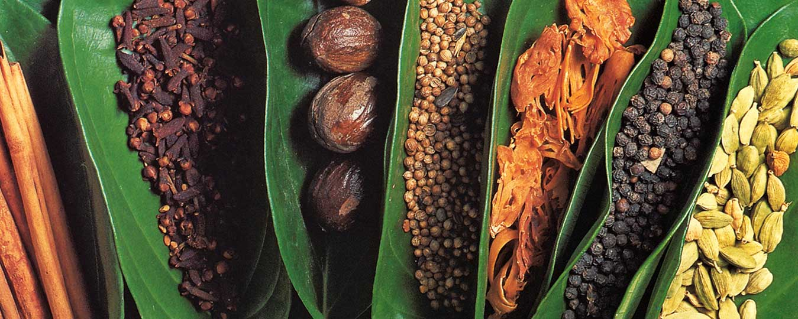

Make your own Sri Lankan curry powder and combine with coconut milk and toasted cashews to spice up chicken thighs in this impressive curry. Scoop up with warm roti for a comforting midweek meal
To make the Sri Lankan curry powder, put all of the ingredients into a large, deep frying pan and cook over a medium heat for 2-3 minutes or until lightly browned and smelling toasty. Cool, then tip into a spice grinder or use a pestle and mortar to grind to a powder.
Tip the cashews into the pan and toast for 2-3 minutes or until caramelised, then tip onto a plate to cool.
Heat the coconut oil in the same pan and cook the chicken thigh pieces for 5 minutes on each side until really golden, then scoop out onto a plate.
Put the onion, ginger, garlic and chillies into a food processor or blender with ½ of the toasted cashews and 50ml of water, and whizz to a paste.
Tip the spice mix into the pan and cook gently for 1 minute. Add the cashew paste and cook gently for 10 minutes until thickened. Tip in the coconut milk with 250ml of water, the cinnamon stick, chicken and the rest of the cashews, and simmer for 30 minutes until the chicken is really tender.
Put the green beans into the pan and simmer for 5 minutes, then add the cherry tomatoes for a final 5 minutes, until the beans are cooked.
Stir through the lime juice and coriander, and serve with rice or roti. Make your own homemade roti to really impress your guests.
